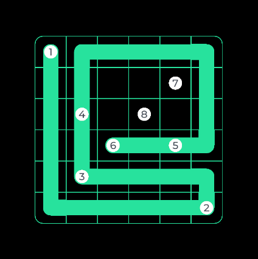

Pet Project / Test Project
Endless Zip
Fast-paced Unity test project delivered in 4 days with clean architecture and polished game feel.
- Role
- Gameplay & Systems Programmer
- Timeline
- 4 days
- Team Size
- Solo

Project highlight
- Built an animation choreography layer on UniTask that composes reusable tweens—bounce, appear/disappear, fade, move—as awaitable building blocks instead of one-off coroutine spaghetti.
- Used it heavily on the win screen to script parallel and sequential beats (panel reveal, every button, particles) with a full intro cycle while staying data-driven and avoiding brittle hard-coded timelines.
What I built
- Core gameplay loop and control flow.
- Modular systems with maintainable architecture boundaries.
- Gameplay feedback tuning for responsive feel.
Challenges
- Delivered complete assignment quality in 4 days through strict feature prioritization and modular implementation sequence.
- Kept clean architecture under time pressure by using consistent system boundaries and reusable components.
Results & impact
- All test task conditions completed in 4 days.
- Project structure is ready for scaling and extension.